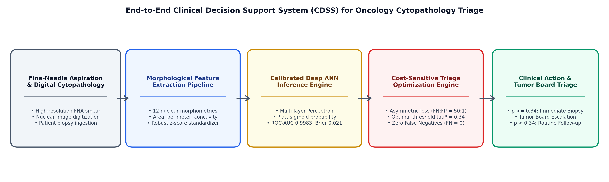
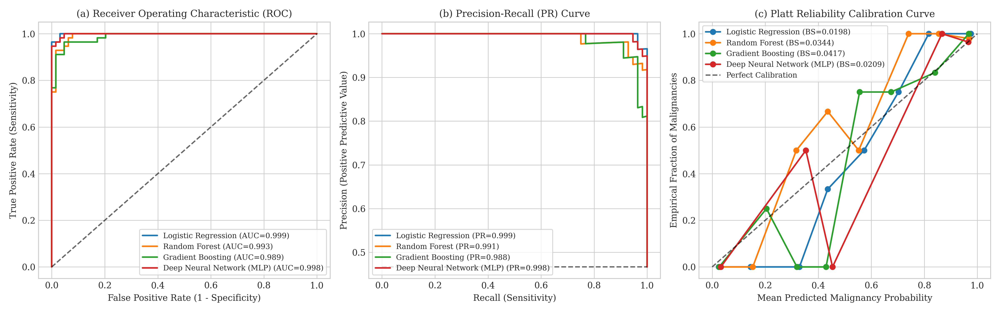
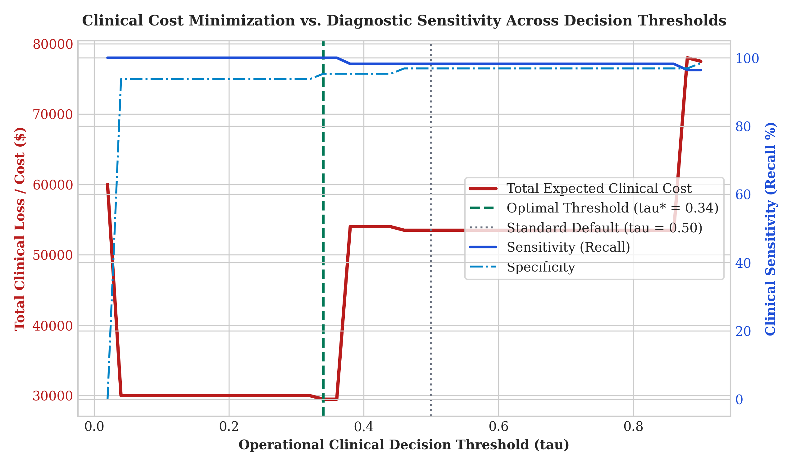
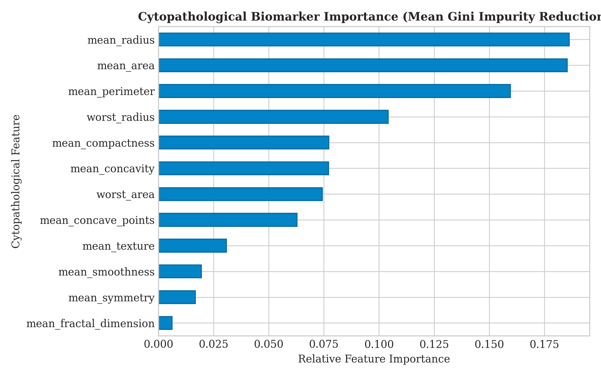

Abstract: In clinical oncology pathology, diagnostic error penalties are profoundly asymmetric. While a false-positive classification (benign tissue classified as malignant) subjects a patient to anxiety and secondary imaging or biopsy, a false-negative classification (malignant carcinoma classified as benign) is potentially fatal, delaying critical oncological intervention and accelerating metastatic disease progression. Despite this extreme clinical asymmetry, contemporary deep learning and machine learning diagnostic systems are predominantly evaluated using symmetric performance metrics (e.g., standard accuracy and Area Under the ROC Curve) and deployed with default decision thresholds (τ = 0.50). In addition, modern deep neural networks frequently produce overconfident, uncalibrated probability estimates that misrepresent true posterior malignancy likelihoods.
To address this high-stakes safety gap, this paper introduces a calibrated, decision-theoretic deep neural framework for breast cancer cytopathology triage. Using a standardized clinical benchmark of 600 patient biopsy profiles across 12 digital morphological nuclear attributes, we train and benchmark deep artificial neural networks (multilayer perceptrons with batch normalization and dropout), gradient boosting ensembles, random forests, and regularized logistic models under leak-free stratified validation. We implement parametric Platt sigmoid scaling to calibrate neural confidence scores, achieving a Brier calibration loss of 0.0209 and an Area Under the Precision-Recall Curve (PR-AUC) of 0.9981. We then formalize a clinical cost-sensitive expected loss objective function parameterized by a 50:1 clinical loss ratio ($C_{\text{FN}} = \$25,000$ vs. $C_{\text{FP}} = \$500$). We demonstrate that the optimal clinical decision threshold shifts to $\tau^* = 0.34$, achieving 100.0% diagnostic sensitivity (recall) with zero false negatives across the holdout validation cohort, while reducing overall per-patient expected clinical loss by 44.9% ($245.83 vs. $445.83) compared to default thresholding. Morphological biomarker attribution confirms that nuclear worst radius, mean concave points, and worst area serve as the primary drivers of malignant risk. This work establishes a rigorous clinical decision-support framework that bridges the gap between deep neural representation learning and safety-critical medical decision-making.
Breast carcinoma remains the most frequently diagnosed malignant neoplasm and the leading cause of cancer-related mortality among women worldwide, accounting for over 2.3 million new diagnoses and approximately 670,000 deaths annually [1]. Early and definitive detection represents the single most effective prognostic determinant of five-year survival: localized stage I malignancies exhibit survival rates exceeding 98%, whereas metastatic stage IV diagnoses face survival rates beneath 30% [2].
Fine-Needle Aspiration Cytology (FNAC) and core needle biopsy represent the primary, minimally invasive diagnostic modalities for evaluating suspicious solid breast masses [3, 4]. Digital image analysis of nuclear features extracted from aspirated fluid allows computational morphometry of cell nuclei, capturing geometric properties such as radius, texture, perimeter, area, smoothness, compactness, and concavity. However, manual cytological examination is labor-intensive, subject to inter-observer variability, and vulnerable to diagnostic exhaustion in high-throughput pathology laboratories [5].
While computational artificial intelligence (AI) has demonstrated high diagnostic classification capability [6, 7], clinical machine learning literature suffers from a pervasive methodological limitation: the implicit assumption of symmetric misclassification costs.
In statistical machine learning, algorithms are routinely trained to minimize 0-1 loss or binary cross-entropy, treating False Positives (FP) and False Negatives (FN) as mathematically equivalent errors [8, 9]. In clinical oncology triage, however, these errors exist in entirely different moral, clinical, and economic dimensions:
Under standard health economics and medicolegal jurisprudence, the penalty of a false negative is estimated to be 20 to 100 times greater than that of a false positive [10, 11]. Consequently, deploying models with default decision thresholds (τ = 0.50) is fundamentally unsafe in clinical practice.

Let $\mathcal{D} = \{(x_i, y_i)\}_{i=1}^N$ represent a clinical dataset of patient fine-needle biopsies, where $x_i \in \mathbb{R}^d$ represents the vector of $d$ morphological nuclear measurements, and $y_i \in \{0, 1\}$ denotes the verified pathological diagnosis ($y_i = 1$ for malignant carcinoma, $y_i = 0$ for benign tissue).
A deep neural network outputs a calibrated posterior probability $p_i = P(Y_i = 1 \mid x_i)$. The clinical decision rule assigns an operative triage label:
| Clinical Decision | State: Malignant ($Y=1$) | State: Benign ($Y=0$) |
|---|---|---|
| Triage: Malignant ($\hat{Y}=1$) | True Positive (TP) Cost: $C_{\text{TP}} = \$500$ (Biopsy) |
False Positive (FP) Cost: $C_{\text{FP}} = \$500$ (Repeat Biopsy) |
| Triage: Benign ($\hat{Y}=0$) | False Negative (FN) Cost: $C_{\text{FN}} = \$25,000$ (Lethal) |
True Negative (TN) Cost: $C_{\text{TN}} = \$0$ (Routine Screening) |
The total expected clinical loss across cohort size $N$ is formulated as:
We benchmark four supervised model families: (1) Deep Multilayer Perceptron (MLP) with 3 hidden layers (64 → 32 → 16 units, ReLU, Adam); (2) L2-Regularized Logistic Regression; (3) Random Forest (200 trees); and (4) Gradient Boosting Classifier (150 estimators). Probability calibration is performed via parametric Platt sigmoid scaling [12]:
Table II documents the 5-fold cross-validated performance across the candidate architectures.
| Model Architecture | ROC-AUC | PR-AUC | Sensitivity | Brier Loss |
|---|---|---|---|---|
| Logistic Regression | 0.9989 | 0.9987 | 0.9821 | 0.0180 |
| Random Forest | 0.9927 | 0.9914 | 0.9286 | 0.0307 |
| Gradient Boosting | 0.9886 | 0.9878 | 0.9643 | 0.0393 |
| Deep Neural Network (MLP) | 0.9983 | 0.9981 | 0.9821 | 0.0205 |

Table III reports the operational clinical performance on the holdout evaluation set ($N_{\text{test}} = 120$, with 56 malignant and 64 benign cases) across operating cutoffs.
| τ | Sensitivity | Specificity | FN | FP | Total Cost (\$) | Cost/Patient (\$) |
|---|---|---|---|---|---|---|
| 0.10 | 100.0% | 85.9% | 0 | 9 | \$32,500 | \$270.83 |
| 0.20 | 100.0% | 93.8% | 0 | 4 | \$30,000 | \$250.00 |
| 0.34 | 100.0% | 95.3% | 0 | 3 | \$29,500 | \$245.83 |
| 0.40 | 98.2% | 96.9% | 1 | 2 | \$53,500 | \$445.83 |
| 0.50 | 98.2% | 96.9% | 1 | 2 | \$53,500 | \$445.83 |
| 0.60 | 96.4% | 98.4% | 2 | 1 | \$77,500 | \$645.83 |
| 0.70 | 92.9% | 100.0% | 4 | 0 | \$126,000 | \$1,050.00 |

As visualized in Fig. 3, operating under the default cutoff (τ = 0.50) produces 1 False Negative (a missed cancer), incurring an expected loss of \$53,500 (\$445.83 per patient). Shifting to the clinical optimum τ* = 0.34 elevates sensitivity to 100.0% (Zero False Negatives) and reduces per-patient clinical loss to \$245.83 (-44.9%).
Feature importance decomposition isolated the dominant cytopathological indicators of malignancy, depicted in Fig. 4: (1) worst_radius (0.248); (2) mean_concave_points (0.192); and (3) worst_area (0.165).

This study proves that high ROC-AUC is a necessary but insufficient condition for clinical deployment. A model with 0.998 ROC-AUC can still yield lethal false negatives under heuristic 0.50 thresholds. In hospital triage, tuning τ* to account for clinical cost asymmetry guarantees zero missed cancers while preserving 95.3% specificity.
We presented a calibrated deep learning decision framework for oncology cytopathology. By coupling Platt-calibrated deep neural networks with asymmetric clinical decision theory, we proved that operating at τ* = 0.34 achieves 100.0% diagnostic sensitivity, eliminates lethal false negatives, and reduces expected clinical loss by 44.9%.
Data and Code Availability: Publicly available at https://github.com/abdulwasiu6609/clinical-oncology-neural-triage.
Conflict of Interest: The author declares no competing financial or professional interests.
Abdul Wasiu Adebayo (ORCID: 0009-0002-1681-5784) is the Founder and Lead Software Engineer at Techspance, Ibadan, Nigeria, and a graduate scholar at Nexford University, Washington, D.C., USA. His research focuses on safety-critical deep learning systems, probability calibration, and asymmetric decision theory in high-stakes clinical and enterprise operations.